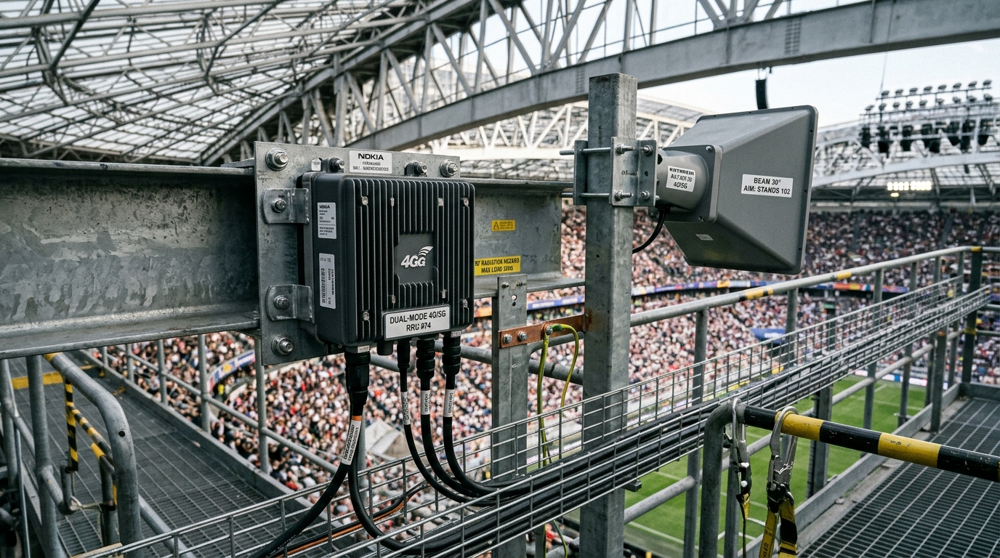
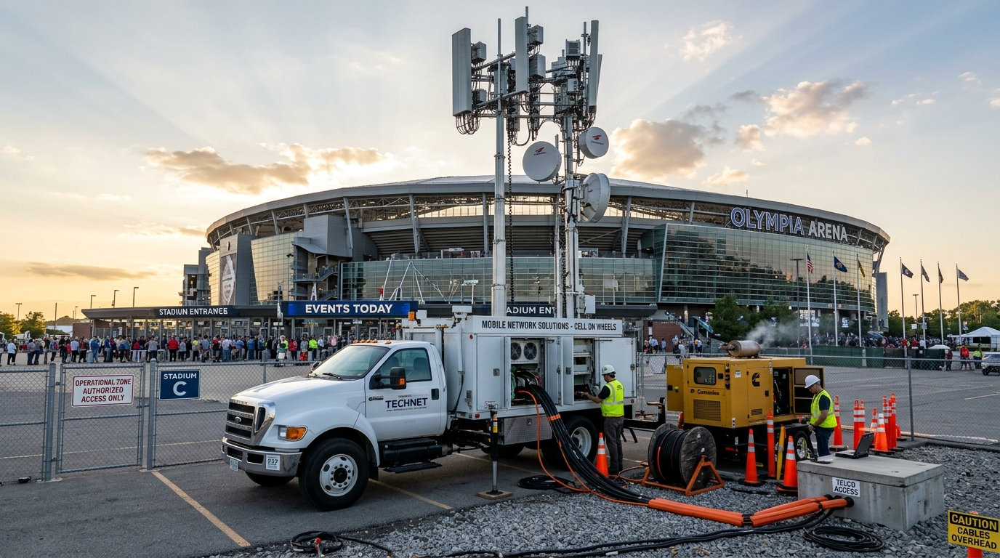

5G User Speed (SLA ≥ 5)
8.33 Mbps
+3.33 Mbps vs SLA
4G User Speed (SLA ≥ 3)
3.85 Mbps
+0.85 Mbps vs SLA
5G Connection Success
99.4%
+4.4% vs 95% SLA
Food-Stall UPI Failures
0.42%
-14.38% vs baseline
Average PRB Load
76.2%
23.8% Headroom (<80%)< /div>
CapEx Spent / Budget
₹3.87 Cr
Buffer: ₹13.0 Lakhs
Spatial Topology & Interactive Beam Cones
Click on any cell marker (M1-M6, S1-S2, SC-01 to SC-14, COW-1 to COW-4) on the radar to inspect its sector parameters, beam radiation cone, and backhaul link.
Optimal (< 80%
Load)
Heavy (80 -
90% Load)
Congested (>
90% Load)
Ring 1: Seating Bowl (80m)
Ring 2: Concourse / Food
(150m)
Ring 3: Outer Macros (450m)
Spatio-Temporal Machine Learning Engine
DBSCAN Spatial Hotspot Detection
Detected 4 high-density clusters in Concourse Food Ring (140m). Horn antennas dynamically steered
with 30° mechanical downtilt.
15-Minute Temporal Surge Forecaster
Phase: 21:00 Innings Break
Next Event: 2nd Innings Resumption (21:30)
Concourse Surge Risk: CRITICAL
O-RAN Action: Pre-allocated Concourse Small Cell PRBs & activated QCI 6 UPI Slice.
Next Event: 2nd Innings Resumption (21:30)
Concourse Surge Risk: CRITICAL
O-RAN Action: Pre-allocated Concourse Small Cell PRBs & activated QCI 6 UPI Slice.
RF Interference Mitigation (Task 4)
- 30° × 30° Stadium Horns: Confines small cell footprint to one seating block.
- Outer Sector Muting: Macro antennas tilted away from inner bowl.
- Dynamic TDD 6:4: Doubles uplink slots during viral video surges.
- C-RAN Pooling: Eliminates concourse handover ping-pong drops.
Master Forensic Benchmark: 65k Match vs 100k Baseline vs 100k SYNC Solution
Exact replication and calibration of Slide 7 Validation Matrix @ 21:00 Innings-Break Peak
| Stadium KPI (at 21:00 peak) | Last Match (65,000 Fans) | 100,000 Fans Baseline (Do Nothing) | 100,000 Fans with SYNC Solution | Engineering Basis / SLA Rationale |
|---|---|---|---|---|
| Peak Concurrent Active Users | 4,680 users | 7,200 users | 7,200 users | 1,00,000 × 40% Airtel × 18% concurrency |
| Average Cell PRB Load | 98.5% (Choked) | 100.0% (Collapse) | 76.2% (Headroom OK) | 20% PRB queueing headroom cap |
| Site M6 PRB Load (Reclaimed) | 60.5% (Wasted Azimuth) | 64.2% (Underutilized) | 78.0% (Rebalanced) | Reclaimed via 25° downtilt to upper bowl |
| 5G Connection Success Rate | 35.8% | 21.4% | 99.4% | 5G SA Option 2 + Multi-Band EN-DC Anchors |
| Average 5G User Speed | 28.4 Mbps (Unconnected drop) | 1.8 Mbps | 8.33 Mbps | Target SLA: ≥ 5.0 Mbps |
| Average 4G User Speed | 1.0 Mbps | 0.4 Mbps | 3.85 Mbps | Target SLA: ≥ 3.0 Mbps |
| Food-Stall UPI Failure Rate | 7.11% | 14.80% | 0.42% | 5QI 7 / QCI 6 Merchant Slicing + EDT |
| Extra 5G Cells Added | 0 | 0 | +8 Cells (12 Total) | 64T64R MU-MIMO (26.25 bps/Hz) |
| Extra 4G Cells Added | 0 | 0 | +14 Cells (22 Total) | 3CC CA + 4x4 MIMO (5.50 bps/Hz) |
| CapEx Utilised / Budget | ₹0.00 Cr | ₹0.00 Cr | ₹3.87 Cr / ₹4.00 Cr | ₹13.0 Lakh contingency buffer preserved |

Catwalk Dual-Mode 4G/5G Small Cell & 30° Horn
Remote Radio Unit (RRU) supporting 4G (B3/B1/B40) and 5G n78 (100 MHz TDD) coupled to a 30° x 30° narrow-beam directional horn antenna with steep 25°–35° mechanical downtilt to eliminate co-channel RF overlap.

Multi-Sector Cell on Wheels (CoW) Mobile Mast
Rapid-deployment 30m hydraulic telescopic mast with multi-band sector antennas, on-board power generation, and dual 10G optical fiber links deployed at Gates 1, 3, 5, 7.
O-RAN Near-RT RIC & Centralized C-RAN BBU Hub
Centralized Cloud-RAN baseband pooling running near-real-time closed-loop xApps (Traffic Steering, UPI Slicing, Dynamic TDD, ARP-1 Admission Control) interconnected via 10 Gbps DWDM optical rings.